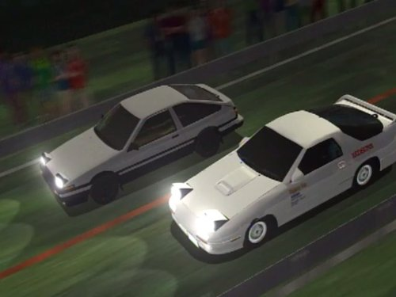
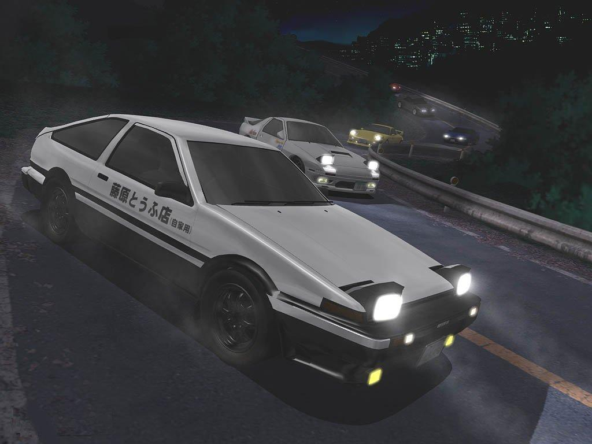

Ordem Cronológica
First Stage
A história começa com os corredores de rua da equipe de Akagi, RedSuns, desafiando o time de Akina, Akina SpeedStars, para uma corrida "amigável". Depois de ver o quanto os RedSuns são habilidosos, os SpeedStars vêem a corrida como uma disputa por seu próprio orgulho, determinados a não serem humilhados em sua própria casa. Entretanto, o líder da equipe, Iketani, acaba sofrendo um acidente enquanto praticava para o desafio.
Iketani descobre que Keisuke Takahashi, dos RedSuns, aparentemente foi derrotado por um misterioso Toyota AE86 enquanto corria no Mt. Akina. Ao procurar pelo carro, descobre que ele pertence ao dono de uma loja de Tofu, Bunta Fujiwara, que era um corredor de rua (street racer) muito famoso quando era jovem. Iketani implora para que Bunta corra em seu lugar contra os RedSuns. No entanto, no dia da corrida, quem aparece no lugar de Bunta é seu filho, Takumi. Embora relutante sobre deixar Takumi correr, Iketani acaba mudando de ideia quando descobre que Takumi é o "Fantasma de Akina", aquele que venceu Keisuke enquanto entregava tofu. Takumi corre conta o Mazda RX-7 Type R FD3S de Keisuke e vence novamente, causando furor entre a comunidade local de corredores de rua e pondo um fim a invencibilidade do RedSuns.
Inicialmente, Takumi não tem interesse algum sobre corridas, apenas correndo contra Keisuke porque seu pai prometeu emprestar o carro com o tanque de gasolina cheio (Takumi tinha um encontro marcado para o dia seguinte), mas com o tempo ele começa a se interessar cada vez mais, a medida que é desafiado. Ele começa a entender o conceito do orgulho dos corredores de rua quando todos dizem para ele recusar o desafio contra o piloto da equipe Night Kids, de Myogi, que pilota um carro muito superior em potência e tecnologia, o Nissan Skyline GT-R V-Spec II R32. A disputa contra outro membro dos Night Kids, Shingo Shouji, se tornou pessoal depois que Shingo tentou fazer Iketani bater e causou um acidente a Itsuki, confundindo-o com Takumi. Depois disso veio o duelo contra Mako e Sayuki, duas garotas de Usui conhecidas como Impact Blue e seu Nissan Sil-Eighty (RPS13) azul, um Nissan 180SX com a frente de um Nissan Silvia.
Cada corrida apresenta condições desfavoráveis para Takumi. Quase todas as vezes o adversário é um carro mais potente do que o AE86 de Takumi, e a corrida contra Shingo foi uma "Gumtape Deathmatch", na qual os dois pilotos tiveram a mão direita presa ao volante com fita adesiva, um tipo de corrida que restringe severamente as habilidades de controle do carro e favorecia o Honda Civic Sir II EG6 de Shingo. A corrida contra o Impact Blue foi a primeira batalha de Takumi em um local que não fosse Akina, sem conhecer a estrada de Usui que é o curso local do time do Sil-Eighty.
Enquanto Takumi corria contra outras pessoas, o irmão de Keisuke e líder dos RedSuns, Ryosuke Takahashi, formulou um "plano perfeito" para vencer Takumi, acreditando nas simulações no computador que ele fez. Quando o verão está quase no fim, Ryosuke desafia Takumi e é derrotado, sendo ultrapassado por Takumi na última curva antes da linha de chegada. Ryosuke diz a Takumi para "não ficar satisfeito em só correr em Akina" e procurar desafios maiores.
Carros presentes
- Nissan Skyline GT-R
- Toyota AE85
- Mazda RX-7
- Nissan 180SX
- Nissan Silvia
- Nissan SilEighty
- Honda Civic
- Toyota AE86

